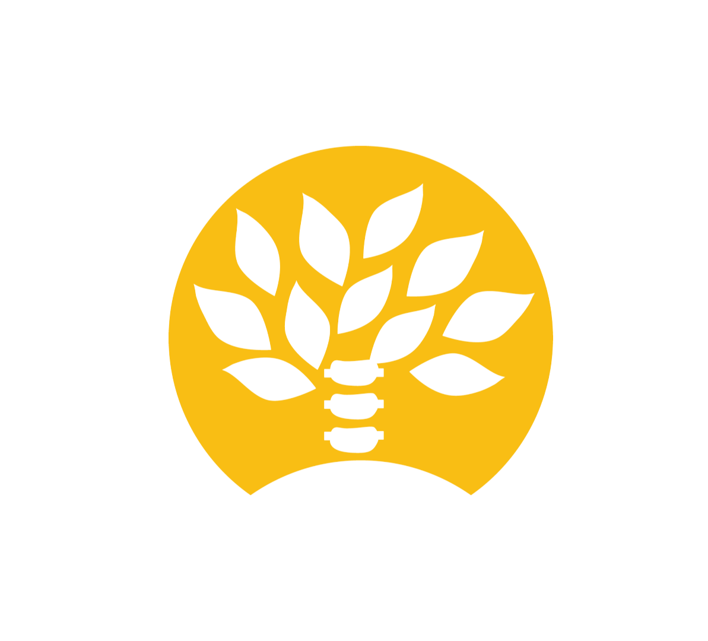

침 치료
불편한 부위와 동반 증상, 건강 상태를 살펴 침 치료의 적용 여부와 주의사항을 설명합니다.

해나무한의원HAENAMU KOREAN MEDICINE CLINIC네이버 예약 ↗동탄에서 이어온 척추·관절 진료
목과 허리, 어깨와 무릎까지.
척추·관절 통증을 중심으로 환자의 상태를 살피고
추나와 약침 등 필요한 진료를 함께 고민합니다.

동탄 해나무한의원의 진료 철학
증상의 경과, 기존 질환, 생활 습관과 복용 약물을 함께 살핍니다.
진료 방향과 치료 시 고려할 점을 쉽게 안내합니다.
경과를 확인하고 일상생활에서 주의할 점을 상담합니다.
내 증상도 진료받을 수 있는지 먼저 살펴보세요. 통증이 나타나는 부위와 경과, 일상에서의 불편함을 함께 확인합니다.
고개를 돌리거나 오래 앉아 있을 때 불편함, 팔·다리 저림 등 증상과 경과를 확인합니다.
증상 자세히 보기 ↗02팔을 들 때 통증, 계단을 오르내릴 때 불편함, 관절 부종과 움직임 제한을 살펴봅니다.
증상 자세히 보기 ↗03반복 사용에 따른 통증과 접질림 등 외상 후 증상을 구분해 필요한 평가를 설명합니다.
증상 자세히 보기 ↗04다친 경위와 통증의 변화를 살피고 응급 평가가 필요한 위험 신호를 함께 확인합니다.
증상 자세히 보기 ↗증상만으로 원인을 단정할 수 없습니다. 급격한 마비나 심한 외상 등 응급 증상이 의심되면 즉시 응급의료기관에서 평가받으세요.
척추·관절 통증 진료 자세히 보기 ↗치료 방법 안내
증상과 진찰 결과, 환자의 건강 상태에 따라 적합한 치료는 달라집니다. 치료의 특징과 주의사항을 확인하고 진료 방향을 결정합니다.
 HAENAMU · CARE
HAENAMU · CARE불편한 부위와 동반 증상, 건강 상태를 살펴 침 치료의 적용 여부와 주의사항을 설명합니다.

초음파는 필요한 경우 해부학적 구조를 확인하는 보조 도구로 활용할 수 있습니다. 치료 자체나 효과를 보장하는 방법은 아닙니다.
관련 안내 ↗생활습관과 건강 상태를 함께 살피는 한약·체중 관리 상담부터 공진단과 녹용 보약까지, 진료에 필요한 정보를 안내합니다.

소화불편, 반복되는 두통, 어지럼증 등은 여러 원인과 관련될 수 있습니다. 증상의 시작과 경과, 동반 증상 및 복용 약물을 확인하고 필요한 경우 추가 검사를 안내합니다. 갑자기 심해진 두통이나 마비, 의식 변화, 혈변·토혈 등은 즉시 적절한 의료기관에서 진료받아야 합니다.
세 원장님의 학력과 경력을 별도 클릭 없이 확인하실 수 있습니다. 자격 명칭과 경력의 최종 표기는 정식 오픈 전 검수할 예정입니다.

침구의학과 전문의 · 동서의학박사

원광대학교 한의과대학 졸업

침구의학과 전문의 · 한의학 석사
원장별 진료 요일은 아래에서 확인할 수 있습니다. 임시 휴진이나 대진이 있을 수 있으므로 예약 전 최신 일정을 확인해 주세요.
의료진 진료 일정 확인처음 방문하시는 분들이 자주 찾는 정보를 정리했습니다. 자세한 안내가 필요하면 전화나 네이버 예약을 이용해 주세요.
불편한 증상이 시작된 시점, 현재 복용 중인 약물, 기존 검사 및 치료 이력을 알려주시면 상담에 도움이 됩니다. 관련 자료가 있다면 지참하셔도 좋습니다.
아닙니다. 병력과 진찰 소견, 알레르기 여부 등 필요한 사항을 확인한 뒤 적합성을 판단합니다.
사고·보험 조건과 진료 내용에 따라 접수 방법이 달라질 수 있습니다. 내원 전 전화로 필요한 정보를 문의해 주세요.
기본 운영은 일요일·공휴일 09:30–15:00이며 점심시간이 없습니다. 임시 변경이 있을 수 있어 내원 전 최신 일정을 확인해 주세요.
상황에 따라 대기나 접수 마감이 있을 수 있습니다. 네이버 예약 또는 031-8003-3653으로 먼저 확인하시면 편리합니다.
별도의 비급여 진료비 안내를 확인해 주세요. 항목·용량·처방에 따라 비용이 다를 수 있으므로 실제 비용은 진료 전에 확인해 주세요.
기본 진료 요일과 임시 변경사항을 안내합니다. 월별 일정은 별도 데이터 파일에서 관리하며, 방문 전 반드시 최신 예약 가능 여부를 확인해 주세요.
진료 일정 정보를 불러오는 중입니다. 기본 요일은 오른쪽 표를 확인해 주세요.
| 월 | 화 | 수 | 목 | 금 | 토 | 일 |
|---|---|---|---|---|---|---|
| 김성수 | 박세운 | 김성수 최영재 | 최영재 | 김성수 | 김성수 | 최영재 |
기본 진료 요일은 예외 일정 및 공휴일에 따라 변경될 수 있습니다.
월별 일정표를 불러오는 중입니다.
경기도 화성시 동탄솔빛로 47, 2층
나루마을 새마을금고 옆 · 031-8003-3653
건물 지하 주차장: 진료시간 동안 주차 지원(데스크에 차량번호 말씀해 주세요)
건물 뒤 공영주차장: 기존 안내 기준 1시간 30분 무료
※ 주차 지원 조건은 변동될 수 있으므로 방문 전 확인해 주세요.
평일·토요일 점심시간 13:00–14:00 / 일요일·공휴일 점심시간 없음
접수는 진료 마감 30분 전 종료